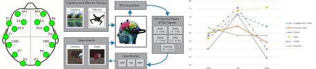
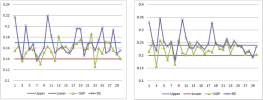
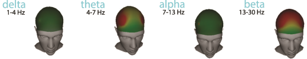
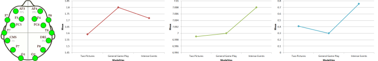

Video Game Assessment
Research involving human subjects is something with which I and my PhD students had
no experience at all until 2013, when we started a
collaboration with UNT's
Thomas D. Parsons.
The following papers were part of the PhD dissertations of Timothy McMahan and Joshua Taylor
under our supervision.

Thomas D. Parsons,
Timothy McMahan,
and
Ian Parberry,
"Classification of Player
Experience Using Consumer-Grade
Electroencephalography",
IEEE Transactions on Affective Computing,
To Appear. [IEEE Xplore]
Abstract
A growing body of literature has emerged that demonstrates the potential
of neurogaming platforms for interfacing with well-known videogames.
With the recent convergence of advances in consumer electronics,
ubiquitous computing, and wearable sensor technologies real-time
monitoring of neurocognitive and affective states can be studied
in an objective, timely, and ecologically valid manner.
Whilst establishing the optimal relation among frequency bands,
task engagement, and arousal states is one of the main goals of
neurogaming, a standardized method has yet to be established.
Herein we aimed to test classifiers within the same context,
group of participants, feature extraction methods, and protocol.
Given the emphasis upon neurogaming, the commercial-grade Emotiv
EPOC headset was used to collect electroencephalographic (EEG)
signals from users as participants experienced various stimulus
modalities aimed at assessing cognitive and affective processing.
The EEG data were then filtered to get separate frequency bands to
train cognitive-affective classifiers with three classification
techniques: Support Vector Machines (SVM), Naïve Bayes (NB),
and k-Nearest Neighbors (kNN). Results revealed that the NB classifier
was the most robust classifier for identifying game-based Death Events.
However, the identification of General Gameplay Events is best
identified using kNN and the Beta band. From this study’s findings,
it is suggested that using a combination of classifiers is preferable
over selecting just one classifier.
Author's Comment
A preliminary version of this paper appeared in Technical Report LARC-2015-04,
Laboratory for Recreational Computing,
Dept. of Computer Science & Engineering, University of North Texas, 2015.
[pdf]

Timothy McMahan,
Ian Parberry, and
Thomas D. Parsons,
"Evaluating Player Task Engagement and Arousal using Electroencephalography",
Proceedings of the 3rd International Conference on
Affective and Pleasurable Design,
pp. 1616-1623, 2015.
[pdf,
BibTeX]
Abstract
Advances in affective computing technologies have made it possible
for researchers to investigate brain function while users interact
in virtual environments. Progress in sensors and algorithms for
off-the-shelf EEG systems has made it possible for gaming researchers
to perform real-time estimation of human cognitive and affective
states using EEG. In this study our aim was to coordinate
"Task Engagement" data with "Arousal-Valence" data. The resulting
coordinate was designed for application to expressive transformations
to video game play in real time by tuning different performance
parameters in an Engagement-Arousal rule system. Results revealed
that the engagement index (Beta / (Alpha + Theta)) was capable of
differentiating high intensity game events (Player Death)
from general game play. Given that higher levels of engagement
during death events may reflect increase in autonomic response,
we also measured arousal by using (BetaF3 + BetaF4) / (AlphaF3 + AlphaF4)
and valence using (AlphaF4 / BetaF4) - (AlphaF3 / BetaF3). Results
revealed that arousal increases and valence decreases during high
intensity game events (Player Death) when compared to lower intensity
game events (General Game Play). Given our desire to establish
"Task Engagement" data with "Arousal-Valence" coordinates for a
flow model, we divided the data into quartiles, which allowed us
to establish upper and lower thresholds to indicate when the player
has left a state of flow. Our aim was to use an off-the-shelf EEG
system to establish "Task Engagement" and "Arousal-Valence"
coordinates during video game play that can be used for a
flow model. It is believed that this model will allow for
future use of the Emotiv for assessing the cognitive and emotional
processing of the player.

Timothy McMahan,
Ian Parberry, and
Thomas D. Parsons,
"Evaluating Electroencephalography Engagement
Indices During Video Game Play",
Proceedings of the 10th International Conference on the Foundations
of Digital Games (FDG 2015), June 22-25, 2015, Pacific Grove, CA, USA, 2015.
Abstract
Given the growing popularity of video gaming and off-the shelf
electroencephalographic (EEG) devices like the Emotiv, there is a
growing need for methods of measuring gamer experience in real-time.
Engagement indices developed to monitor human engagement have yet
to be implemented with the Emotiv. In this study, we compared three
different engagement indices during various video game modalities
using the Emotiv device. EEG data was collected from 30 participants
during video game play of Super Meat Boy. Two EEG indices (frontal
theta and the ratio of beta to alpha+theta) showed a significant
difference in engagement level among the different gaming modalities
with the increasingly difficult cognitive demand. Our findings suggest
that the Emotive EEG can be to measure a player’s varying levels of
engagement as they play a video game.
Author's Comment
A preliminary version of this paper was published as
Technical Report LARC-2015-03,
Laboratory for Recreational Computing,
Dept. of Computer Science & Engineering, University of North Texas,
February 2015
[pdf,
BibTeX].
Joshua Taylor,
Thomas D. Parsons,
Ian Parberry,
"Comparing Player Attention on Procedurally Generated vs.
Hand Crafted Sokoban Levels with an Auditory Stroop Test",
Proceedings of the 10th International Conference on the Foundations of
Digital Games (FDG 2015), June 22-25, 2015, Pacific Grove, CA, USA, 2015.
Abstract
Evidence is provided that players pay at least as much attention to
a set of procedurally generated Sokoban levels as they do to levels hand crafted by
expert designers.
Data were collected from 40 participants who played Sokoban under laboratory conditions
while simultaneously performing an auditory Stroop test.
Three performance measures from the Stroop test were
analyzed and compared
after accounting for differences in individual players.
Author's Comments
A preliminary version of this paper was published as
Technical Report LARC-2015-02,
Laboratory for Recreational Computing, Dept. of Computer Science & Engineering,
University of North Texas, February 2015
[pdf,
BibTeX]
For more information on the procedural level generator that was used in this evaluation, see
Joshua Taylor and Ian Parberry,
"Procedural Generation of Sokoban Levels",
Proceedings of the 6th International North American Conference on
Intelligent Games and Simulation, pp. 5-12, 2011.
Cognitive Assessment (2015)

Timothy McMahan,
Ian Parberry,
and
Thomas D. Parsons,
"Modality Specific Assessment of Video Game Player's Experience
Using the Emotiv",
Entertainment Computing,
Vol. 7, pp. 1-6, March 2015.
[
Article
and BibTex at Science Direct
]
Abstract
A growing body of literature has emerged that focuses upon cognitive
assessment of video game player experience. Given the growing popularity
of video gaming and the increasing literature on cognitive aspects of
video gamers, there is a growing need for novel approaches to assessment
of the cognitive processes that occur while persons are immersed in
video games. In this study, we assessed various stimulus modalities
and gaming events using an off-the-shelf EEG devise. A significant
difference was found among different stimulus modalities with increasingly
difficult cognitive demands. Specifically, beta and gamma power were
significantly increased during high intensity events when compared to
low intensity gaming events. Our findings suggest that the Emotiv EEG
can be used to differentiate between varying stimulus modalities and
accompanying cognitive processes.
Author's Comments
A preliminary version of this paper was published under the title
"Modality Specific Assessment of Video Game Player's Cognitive Workload
Using Off-the-Shelf Electroencephalographic Technologies",
as Technical Report LARC-2014-03,
Laboratory for Recreational Computing,
Dept. of Computer Science & Engineering, University of North Texas,
April 2014.
[pdf,
BibTeX]
Created April 28, 2011.
Last updated May 31, 2020.